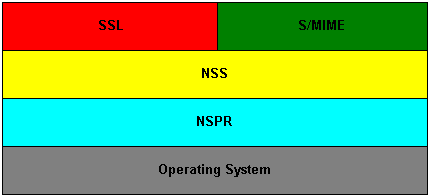

Network Security Services (NSS) is a set of libraries designed to support cross-platform development of communications applications that support SSL, S/MIME, and other Internet security standards. For a general overview of NSS and the standards it supports, see Overview of NSS.
Network Security Services provides both static libraries and shared libraries. Applications that use the shared libraries must use only the APIs that they export. Three shared libraries export public functions:
We guarantee that applications using the exported APIs will remain compatible with future versions of those libraries. For a complete list of public functions exported by these shared libraries in NSS 3.2, see NSS functions.
For information on which static libraries in NSS 3.1.1 are replaced by each of the above shared libraries in NSS 3.2 , see Migration from NSS 3.1.1.
Figure 1, below, shows a simplified view of the relationships among the three shared libraries listed above and NSPR, which provides low-level cross platform support for operations such as threading and I/O. (Note that NSPR is a separate Mozilla project; see Netscape Portable Runtime for details.)

Windows and Unix use different naming conventions for static and dynamic libraries:
| Windows | Unix | |
|---|---|---|
| static | .lib |
.a |
| dynamic | .dll |
.so or .sl |
In addition, Windows has "import" libraries that bind to dynamic libraries. So the NSS library has the following forms:
libnss3.so - Unix shared librarylibnss3.sl - HP-UX shared librarylibnss.a - Unix static librarynss3.dll - Windows shared librarynss3.lib - Windows import library binding to nss3.dllnss.lib - Windows static libraryNSS, SSL, and S/MIME have all of the above forms.
The following static libraries aren't included in any shared libraries
libcrmf.a/crmf.lib provides an API for CRMF operations.libjar.a/jar.lib provides an API for creating JAR files.The following static libraries are included only in external loadable PKCS #11 modules:
libnssckfw.a/nssckfw.lib provides an API for writing PKCS #11 modules.libswfci.a/swfci.lib provides support for software FORTEZZA.The following shared libraries are standalone loadable modules, not meant to be linked with directly:
libfort.so/libfort.sl/fort32.dll provides support for hardware FORTEZZA.libswft.so/libswft.sl/swft32.dll provides support for software FORTEZZA.libnssckbi.so/libnssckbi.sl/nssckbi.dll defines the default set of trusted root certificates.In NSS 3.2 and later versions, there are two new shared libraries for the platforms HP-UX for PARisc CPUs and Solaris for (Ultra)Sparc (not x86) CPUs. These HP and Solaris platforms allow programs that use the ILP32 program model to run on both 32-bit CPUs and 64-bit CPUs. The two libraries exist to provide optimal performance on each of the two types of CPUs.
These two extra shared libraries are not supplied on any other platforms. The names of these libraries are platform-dependent, as shown in the following table.
| Platform | for 32-bit CPUs | for 64-bit CPUs |
|---|---|---|
| Solaris/Sparc | libfreebl_pure32_3.so |
libfreebl_hybrid_3.so |
| HPUX/PARisc | libfreebl_pure32_3.sl |
libfreebl_hybrid_3.sl |
| AIX (planned for a future release) | libfreebl_pure32_3_shr.a |
libfreebl_hybrid_3_shr.a |
An application should not link against these libraries, because they are dynamically loaded by NSS at run time. Linking the application against one or the other of these libraries may produce an application program that can only run on one type of CPU (e.g. only on 64-bit CPUs, not on 32-bit CPUs) or that doesn't use the more efficient 64-bit code on 64-bit CPUs, which defeats the purpose of having these shared libraries.
On platforms for which these shared libraries exist, NSS 3.2 will fail if these shared libs are not present. So, an application must include these files in its distribution of NSS shared libraries. These shared libraries should be installed in the same directory where the other NSS shared libraries (such as libnss3.so) are installed. Both shared libs should always be installed whether the target system has a 32-bit CPU or a 64-bit CPU. NSS will pick the right one for the local system at run time.
Note that NSS 3.x is also available in the LP64 model for these platforms, but the LP64 model of NSS 3.x does not have these two extra shared libraries.
Before using NSS, you should be familiar with the following topics:
For information about PKI and SSL that you should understand before using NSS, see the following:
For links to API documentation, build instructions, and other useful information, see the NSS Project Page.
As mentioned above, NSS is built on top of NSPR. The API documentation for NSPR is available at NSPR API Reference.